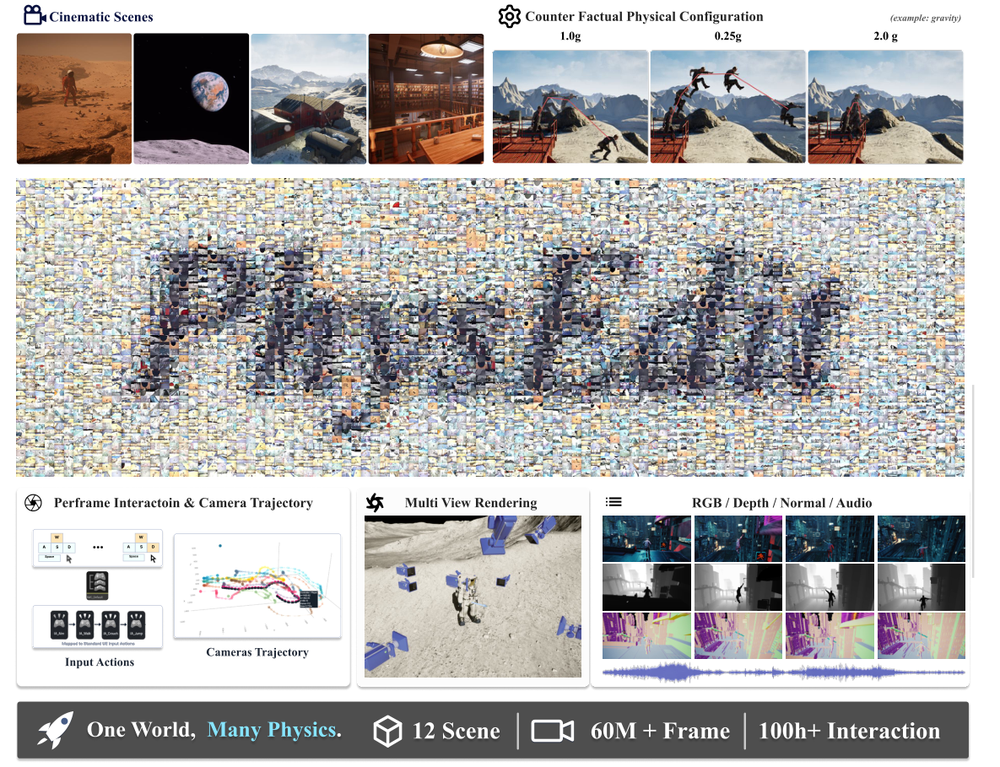
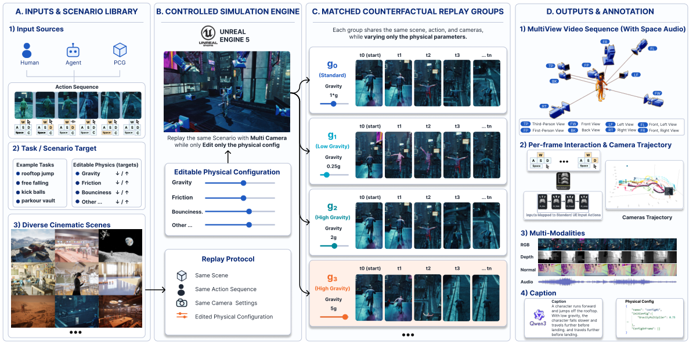
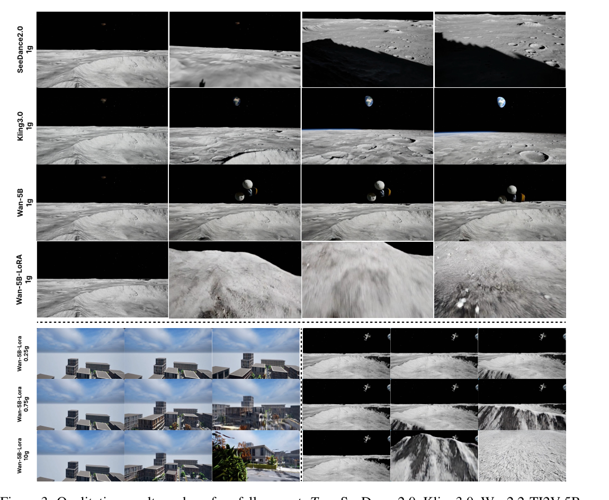
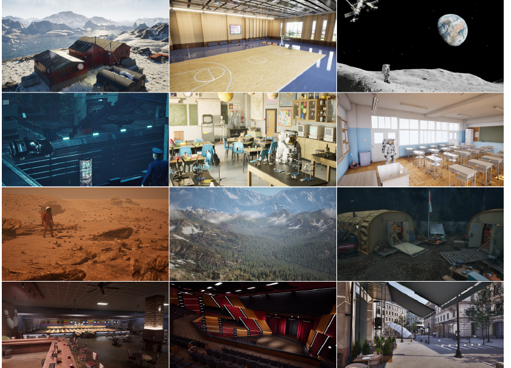

PhysEditWorld: A Large-Scale Dataset Toward Physics-Editable World Models

1.0g / 0.25g / 2.0g 三种重力下重放（右上），人物的腾空时间、下落速度、落点完全不同；而场景、动作、相机保持一致。底部强调三个量级：12 个场景 · 60M+ 帧 · 100h+ 交互，每帧带 RGB / 深度 / 法线 / 音频 / 动作 / 相机轨迹 / 引擎态 / 重力标签。
问题
game world model 把物理学成数据里的隐式相关性，无法把「重力」当作可编辑的设计变量来响应。
数据
matched counterfactual replay group：固定场景/动作/相机，只改重力。12 场景、60M+ 帧、8 路同步相机。
管线
UE5 in-editor 插件，直接在美术成品关卡上做 replay-and-rendering，不在外部模拟器重建场景。
验证
三个 utility study：文生视频、第一人称世界模型、VLM 重力推断。LoRA 微调后重力对齐 33%→100%。
1. 出发点 (Motivation)
近两年的 game world model（Genie、DIAMOND、GameNGen、GameGen-X、Matrix-Game 3.0、LingBot-World……）已经从「视觉预测器」进化成「可交互的生成式模拟器」：给一段动作就能合成看起来合理的游戏画面。但论文指出一个被掩盖的能力缺口——这些模型把物理当成数据分布的隐式规律（implicit regularity）来学。它们能模仿「这个游戏通常怎么演化」，却答不出游戏作者真正关心的问题：
如果我把一条物理规则改了，同一个场景应该怎么演化？
这不是吹毛求疵。游戏开发者天天在调重力缩放、跳跃手感、摩擦、阻力、风力，用这些参数来塑造节奏、难度、手感。一个把「物理参数」和「画面外观 / 玩法统计」纠缠在一起的世界模型，能生成视觉上可信的片段，但作为一个可编辑的游戏模拟器（editable simulator）是失败的——你没法对它说「把重力调到 0.25g」然后期待它给出物理上自洽的慢速下落。
论文把第一步聚焦在重力（gravity），理由很务实：重力在所有引擎里都支持，且它的改变会产生肉眼可见的后果——跳跃弧线、腾空时间、下落速度、物体轨迹。它是「可测量的可编辑物理」最干净的切入点。
关键空白在于：现有数据集没有一个是围绕「受控物理干预」组织的。ALE / Procgen / MineRL / CARLA 是为策略学习造的，物理规则固定；Sekai 这类世界探索数据集有相机轨迹和丰富标注，但不是按「匹配的物理干预」组织的；PHYRE / CLEVRER / Physion / VideoPhy / PhyGenBench / Physics-IQ 这些物理推理与视频生成 benchmark 评的是「直觉物理 / 物理可信度」，但都没有提供「场景、交互轨迹、相机策略全部固定、只把重力显式改掉」的成对游戏片段。这正是 PhysEditWorld 要填的洞。
Replay group
一组样本，共享同一场景、初始态、动作序列、角色控制器、相机策略，只有「重力配置」不同。它是数据集的基本单元。
Matched counterfactual
「匹配的反事实」：因为只有重力是变量，组内任何运动差异都能归因到这个物理干预，而非场景/动作/相机的变化。
Enhanced Input
UE5 的语义输入系统。管线记录「移动轴 / 跳跃指令 / 相机增量」这类意图级动作，而非原始键鼠事件，避免硬件混杂因子。
Movie Render Queue / Graph
UE5 的离线高质量渲染系统。这里用它从同一次重放导出多分支输出：RGB、分割 ID、深度、法线、带音频的预览视频。
Gravity multiplier
重力倍率，相对地球重力 $g_\oplus$。取值集 $\{0.05, 0.1, 0.5, 1.0, 2.0, 5.0, 20.0\}\times g_\oplus$，作为文本 token 注入条件提示（如 "gravity: 0.25g"）。
VGGT
一个从视频恢复相机轨迹的模型。因为生成视频不暴露模拟器状态，作者用它的竖轴分量当作「下落进度」的一维代理信号来评估重力响应。
2. 方法 (Method)
PhysEditWorld 没有炫目的损失函数——它的「方法」是一套数据生产协议和一个数据契约。核心思想可以用一行式子表达。
2.1 Replay 范式：把物理变成唯一的受控变量
令 \(A\) 为准备好的 UE5 场景，\(S\) 为归一化动作序列，\(M\) 为角色控制器，\(\theta\) 为可编辑的物理配置，\(\pi_c\) 为相机策略。一次 rollout 生成为：
—— 翻译: 一段视频 $x$ 是「场景 + 动作 + 控制器 + 物理配置 + 相机」五元组经过 UE5 渲染函数 $F$ 的输出。这个式子本身平平无奇，关键在下一句怎么用它。
Replay expansion 的做法是：固定 \((A, S, M, \pi_c)\)，只让 \(\theta\) 取不同值重跑同一个场景。这样一来，不同 variant 之间的差异就只能归因到被编辑的模拟参数，而不是场景内容、输入行为、角色设置或相机规格的变化。这就是「matched counterfactual」的数学含义——把重力做成实验里唯一被操纵的自变量，其余全部 hold constant。
论文特别强调动作序列是 scene-bound（场景绑定） 的：动作的语义依赖局部几何、障碍物、交互目标，所以管线是在「已验证的场景-动作对」上沿着兼容的物理配置展开，而不是把动作迁移到别的场景。

2.2 数据契约：一个样本长什么样
论文方法的「可复现性」不落在算法上，而落在数据 schema 上。仓库的 data/README.md 把每个样本定义为「一个完整的录制-渲染 job，对应固定的场景、动作序列、相机设置和物理配置」，用 8 位字符串作样本 id。全局索引 Details.json 是真正的数据契约：
repo/data/README.md — Details.json 全局样本索引（每条记录一个 matched replay 样本，路径相对数据集根）
{
"sample_id": "00000000",
"scene_name": "Map_MarsRover",
"action_sequence_name": "MarsSequence_0001",
"physical_config_name": "G_0.05",
"physical_config_file": "PhysicalConfig/G_0.05.json",
"frame_meta_file": "Meta/00000000_meta_frame.csv",
"time_meta_file": "Meta/00000000_meta_time.csv",
"camera_names": ["BK_Camera", "FL_Camera", "FP_Camera"],
"aux_types": ["Depth", "Normals", "ObjectMask"],
"cameras": [
{
"camera_name": "FP_Camera",
"rgb_file": "Video/00000000/FP_Camera.mp4",
"aux": {
"Depth": "Aux/Depth/00000000/FP_Camera",
"Normals": "Aux/Normals/00000000/FP_Camera",
"ObjectMask": "Aux/ObjectMask/00000000/FP_Camera"
},
"resolution": {"width": 1280, "height": 720},
"fps": 30
}
]
}
注意 physical_config_name: "G_0.05" 和 action_sequence_name 这两个字段——它们正是 §2.1 里 \(\theta\) 和 \(S\) 的落地。一个 replay group 就是一组 Details.json 条目，它们的 scene_name + action_sequence_name + camera_names 完全相同，只有 physical_config_name 不同。数据集的「匹配」结构是靠这两个字段隐式编码的，而不是靠一个显式的 group_id——这是个值得注意的设计取舍（见 §4）。
落到磁盘上的目录布局也固定为：
repo/data/README.md — 清洗后数据集的 canonical layout（论文 §C）
<dataset_root>/
Details.json
Video/<sample_id>/<camera_name>.mp4
Meta/<sample_id>_meta_frame.csv # 逐帧元数据：对齐视觉观测与模拟状态
Meta/<sample_id>_meta_time.csv # 事件级元数据：录制/重放的起止等
PhysicalConfig/<physical_config_name>.json
Aux/<aux_type>/<sample_id>/<camera_name>/<frame_id>.png # 深度/法线/物体掩码（可选）
两个 CSV 提供互补的时间标注：frame-level 按渲染帧索引（用来把视觉观测和模拟状态对齐），time-level 按事件/时间记录（如录制重放的起止）。PhysicalConfig/*.json 存的是受控模拟参数本身——下游可以直接 condition 在这个显式物理设置上。
3. 结论 (Key findings)
论文的实验目标写得很克制：不是给生成模型排名，而是测「在匹配的重力 rollout 上微调，能不能改善模型对显式重力条件的响应」。因为视觉上可信的生成也可能物理上失败——相机几乎不动、下落被延迟、或者高重力 rollout 并不比低重力加速更快。PhysEditWorld 的价值就是把这些失败变得可测量。
3.1 评估指标：用 VGGT 把「下落」量化
生成视频不暴露模拟器状态，所以作者用 VGGT 恢复逐帧相机轨迹，取竖轴分量作一维「下落进度」信号 \(q(t)\)，限定在落地前段。对每个可靠片段，把 \(q(t)\) 的中心差分速度 \(v(t)\) 拟合线性模型：
—— 翻译: 把下落速度近似成「匀加速」直线，斜率 $a$ 就是归一化的加速度代理。直线拟合得越好（$R^2$ 越高），说明运动越像真正的重力加速。
再算组内的重力-加速度配对对齐率：
—— 翻译: 在一个 replay group 内枚举所有重力对 $(i,j)$，若「请求重力更大的那个，拟合加速度也更大」就记 1。完美的重力忠实模型 $\mathrm{Align}=1.0$，瞎猜是 $0.5$。这是个纯序关系指标——它不在乎绝对数值对不对，只在乎重力的相对排序有没有被尊重。
注意 VGGT 轨迹有尺度歧义，所以所有速度/加速度都是「归一化 VGGT 单位」，只有同一 replay group 内的相对比较有意义——这是个诚实的标注，也限制了指标的解读力（见 §5）。
3.2 三个 utility study 的结果
(a) 重力条件文生视频。 在一个代表性 held-out replay group（重力 0.25× / 0.75× / 10.0×）上，Wan2.2-TI2V-5B 微调前后：
| 模型 | Accel. @0.25× | Accel. @0.75× | Accel. @10.0× | Mean \(R^2\) ↑ | Gravity Align. ↑ |
|---|---|---|---|---|---|
| Wan2.2-TI2V-5B（zero-shot） | 0.0002 | 0.0046 | 0.0009 | 0.066 | 33.3% |
| Wan2.2-TI2V-5B + PhysEditWorld SFT | 0.1766 | 0.3983 | 0.6214 | 0.570 | 100.0% |
zero-shot 模型对请求的重力几乎无感：三档重力下加速度代理都接近零，33.3% 的对齐率（恰好等于三档的瞎猜值）说明重力排序根本没被保留。微调后加速度代理随请求重力单调递增、对齐率打满 100%、\(R^2\) 从 0.066 升到 0.570——模型开始把重力当成一个可控变量来响应。

(b) 动作条件第一人称世界模型。 用一个极简压力测试：从屋顶边缘持续按住 W 键——重力忠实的模型应该产生「离开平台 → 重力相关的下落」。Matrix-Game 3.0 和 zero-shot LingBot-World 都赖在平台边缘、永远进不了自由落体；LoRA 微调后的 LingBot-World 则产生了离台 + 随请求重力缩放的下落自运动。这说明重力响应失败不局限于文本条件生成，PhysEditWorld 在两种生成范式上都是有效监督。
(c) 重力感知 VLM。 在 170 条 held-out rollout 上让 Qwen3-VL-8B 预测重力类别（低/正常/高）和连续重力倍率：
| 模型 | Class Acc.(%) ↑ | MAE ↓ | Median APE(%) ↓ | Within 10% ↑ |
|---|---|---|---|---|
| Qwen3-VL-8B | 24.71 | 5.4573 | 95.00 | 9.48 |
| Qwen3-VL-8B + SFT | 95.29 | 0.8305 | 6.22 | 90.59 |
zero-shot 的类别准确率 24.71%——比三分类瞎猜的 33.3% 还低，中位 APE 高达 95%，证明重力量级从视频里基本不可靠地恢复。LoRA SFT 后类别准确率冲到 95.29%，中位 APE 跌到 6.22%，90.59% 的预测落在真值 ±10% 内。为防标签记忆，训练时还给重力目标加了 ±10% 抖动。
三个 study 指向同一个结论：「可编辑物理」是当前 game world model 普遍缺失的能力；而 PhysEditWorld 这种「物理被显式改变」的成对 rollout，能作为有效监督信号把这个能力补回来。
4. 实现细节 (Implementation notes)
这是论文最扎实、也最有「系统/工程」味道的部分。代码（UE5 插件本体）目前尚未释出——仓库 code/ 下只有 planned 组件的文档；但论文正文（§4、附录 A–D）和仓库的数据/配置文档已经把工程取舍交代得相当清楚。下面是 ≥5 个值得记的细节，每条尽量给出出处。
-
In-editor 插件，不重建场景。 管线是一个叫 DataFactory 的 UE5 in-editor 插件，直接在美术成品关卡上工作（注册场景、绑定控制器、设相机、编辑物理参数、批量执行），而不是在外部模拟器里重建场景（论文 §4.2）。这把「数据生产」嵌进了标准游戏开发工作流，而非另起炉灶。四个编辑器操作就能把一个美术关卡转成可生产关卡：选 EnhancedInputContext → 指定 sequence 和相机绑定 → 跑 FactoryManager 初始化 → 保存（附录 B）。
-
记录语义动作而非原始事件。 动作序列记的是 UE5 Enhanced Input 的语义 Input Action（移动轴、跳跃指令、相机增量、按键状态），不记原始设备事件（论文 §4.1）。这样能保留交互意图，同时避开键盘布局、鼠标灵敏度、手柄映射、平台事件 API 这些硬件混杂因子——对「跨配置可重放」是必要条件。
-
角色中心式多相机 rig + 低重力动画调谐器。 8 路相机（FP/BK/FL/FW/FR/LF/RT/TP）不是独立摆在场景里，而是嵌在角色蓝图内、通过骨骼 socket / spring arm 挂载（附录 A.2），所以所有视角共享一个角色中心参考系，跳跃/下落/落地时严格时间对齐。重放渲染时关闭 camera lag 以保证确定性帧对齐。另有一个 low-gravity animation tuner，根据重力倍率调整腾空状态检测和动画播放速率，防止低重力片段用上视觉上不合理的地球重力动画时序（附录 A.1）——这是个容易被忽视但对「物理可信」很关键的细节。
-
Movie Render Graph 多分支同步导出。 渲染配成多分支 MRG：object-ID/分割分支、8-bit 图像分支（含 motion vector 和 world normal）、H.264 MP4 预览分支（带音频，供人工质检）、16-bit PNG 高精度深度分支；并行写出 frame-level 和 time-level CSV 元数据 + 相机名映射 JSON（附录 A.3）。所有记录用共享的 rollout 身份和帧时间线索引，保证渲染观测和引擎侧日志的确定性对齐。捕获前还有 warm-up 区间，让动画状态、TAA、后处理、运动模糊达到稳态再开始写帧。
-
后处理 caption 不喂模拟器元数据。 每条 rollout 用 Qwen3-VL-8B-Instruct 生成 per-clip caption，但caption 模型只看采样的渲染帧、不接收模拟器元数据（论文 §4.4）。这避免了「标注泄漏」——caption 描述的是从画面能看到的东西，而非引擎里的 ground truth 重力值。带渲染失败、同步断裂、相机穿模、模拟不稳、或非预期物理编辑导致的发散的重放会被丢弃。
-
批量生产的 CLI / 配置契约。 论文 §D 和仓库
code/README.md给出了仓库级入口Scripts/cli.py的用法——先--dry-run检查 plan，再实跑：
repo/code/README.md — 数据生产管线入口（论文 §D Example usage，等价命令；插件源码尚未释出）
# 先 dry-run 校验配置、检查规划好的渲染 job
uv run --with pyyaml python Scripts/cli.py \
--config Scripts/configs/base.yaml --dry-run
# 验证 plan 后跑完整 render + clean 管线
uv run --with pyyaml python Scripts/cli.py \
--config Scripts/configs/base.yaml
配置文件的形状也在文档里固定下来，可以看到 scenes 列表、MRG 预设、分辨率/帧率，以及 render/clean 两阶段开关：
repo/code/README.md — 典型 YAML 配置形状（render + clean 两阶段，clean 支持 checkpoint/resume、workers 并行）
base_path: <project_root>
unreal_exe: <path_to_UnrealEditor>
dataset_path: <raw_dataset_root>
output_path: <cleaned_dataset_root>
physical_config: <physical_config_root>
scenes:
- name: <scene_name>
level_path: <unreal_level_asset_path>
level_sequence_path: <unreal_level_sequence_asset_path>
job:
selection: auto
mrg_path: <movie_render_graph_asset_path>
params: { fps: 30, resolution: [1280, 720], mp4: true }
pipeline:
render: { enable: true, auto_start: true }
clean: { enable: true, workers: 8, overwrite: false, dataset_name: <name> }
batch 系统支持 checkpoint / resume，被打断的 job 能从上一个有效状态续跑，而非从头来——对 60M+ 帧的离线生产是刚需。
论文 vs 代码的一致性。 这里没有「方法实现」可对照——仓库目前是一个**分阶段释出（Release: Staged）**的状态：项目页、论文、数据契约、配置文档齐全，但 UE5 插件源码和数据包本身都标记为 Planned。code/README.md 自己也写明「Source files will be added here as the release is packaged」。数据托管在 ModelScope（GelerCAT/PhysicalWorld）。所以本文引用的「代码」严格来说是数据契约 + CLI/配置文档，而非可运行的管线源码——这点必须对读者讲清楚，不能假装跑过。

5. 批判性总结 (Critical assessment)
优点
- 协议干净、问题切得准。 把「可编辑物理」formalize 成「受控反事实重放」是个漂亮的 reframing：它把「视觉可信」和「物理可控」这两件被长期混为一谈的事分开测量，并暴露了标准视频质量指标看不见的失败模式（相机不动、下落延迟、重力排序错乱）。Table 1 的对比也站得住——它确实是第一个同时具备多视角 + RGB-D-N-A + 显式可编辑重力 + 相机标注 + 动作轨迹的资源。
- 工程交代扎实。 角色中心多相机 rig、关闭 camera lag 保确定性、low-gravity animation tuner、caption 不喂元数据防泄漏、MRG 多分支同步导出——这些细节显示作者真的在「可复现的物理测量」上下了功夫，而不只是堆数据量。
- utility study 虽小但说服力够。 三个 study 跨了文生视频 / 第一人称世界模型 / VLM 三种范式，结论一致（zero-shot 普遍重力无感、微调后显著改善），互相印证。
局限与开放问题
- 评估指标依赖 VGGT，且只有序关系有效。 整个生成质量评估建立在「VGGT 恢复的竖轴轨迹」上，而 VGGT 本身有尺度歧义、且对生成视频（非真实视频）的鲁棒性未知。
Align是纯序关系指标——它说不出「0.25g 的下落速度是否在物理上对」，只说「排序对不对」。一个把所有重力都夸张化、但保持单调的模型也能拿满分 100%。「物理上正确」和「重力排序正确」之间的 gap 没有被这套指标覆盖。 - 表 2/3 的样本量极小。 表 2 是「一个代表性 held-out replay group、三档重力」；100% 对齐率在三档上只需 3 个配对全对。表 3 的 170 条 held-out 也只来自 3 个场景。这些数字更像 proof-of-concept，离「数据集 utility 的统计性结论」还有距离。held-out 只有 3 个场景，泛化性证据偏薄。
- 代码与数据尚未真正释出。 论文的核心卖点是「一套可复现的生产管线」，但 UE5 插件源码标记为 Planned、数据包标记为 Planned。在这些落地之前，外部无法验证 60M+ 帧的质量、replay 的确定性、或 caption 的可靠性。「可复现」目前是承诺，不是事实。
- 「matched」结构靠字段约定隐式编码。
Details.json里没有显式的replay_group_id——成对关系要靠scene_name + action_sequence_name + camera 集合相同、physical_config_name不同来重建。这对 dataloader 写起来是个隐患（容易把跨组样本误配成一组），一个显式 group id 会更稳。 - 只做了重力一种物理。 论文诚实地承认这是 initial version。摩擦、阻力、回弹、风、物体级物理参数都还在 future work。当前形态下，它更像「重力可编辑数据集」而非「物理可编辑数据集」——标题里的 "Physics-Editable" 略超前于内容。
研究启发 (Transferable takeaways)
反事实即监督
「固定一切、只动一个变量」的 matched counterfactual 不止适用于重力——任何想让模型「响应某个显式条件」的任务（光照、材质、相机内参），都可以用同款重放协议造成对数据，把「相关性」逼成「因果可控性」。
用代理信号绕开缺失的 GT
生成视频拿不到模拟器状态，作者就用 VGGT 轨迹的竖轴当下落代理 + 纯序关系的 Align 指标。当 ground truth 不可得时，「构造一个只需相对比较就成立的弱指标」往往比「硬求绝对真值」更可行——但要像本文一样诚实标注它的局限。
在成品工作流里造数据
不在外部模拟器重建、而用 in-editor 插件直接吃美术成品关卡——这把数据生产的边际成本压到「美术已经做完的资产 + 一次重放」。对任何有现成内容管线的团队（游戏、影视、CAD），这是比「从零搭仿真」更省的合成数据路线。
标注防泄漏是默认项
caption 模型只看渲染帧、不看引擎元数据——一个小决定，但避免了「模型其实在背标签」。凡是「用模型 A 给模型 B 造监督」的 pipeline，都该默认隔离掉 A 能作弊的旁路信息。
延伸阅读：交叉验证比较
PhysEditWorld 是「世界模型」这条线上的数据/评估侧工作；本仓库里另两篇是模型/蒸馏侧。把三者的结论并排，能看出这条赛道当前的共识与盲点：
| 工作 | 切入点 | 对「物理/交互」的处理 | 关键结论 | 可复现性 |
|---|---|---|---|---|
| PhysEditWorld（本文） | 数据集 + 评估协议 | 把重力做成显式可编辑变量，受控反事实重放 | 当前 world model 普遍重力无感（对齐 33%），匹配数据微调后可补回（→100%） | 代码/数据 Planned，承诺态 |
| self-forcing-2025 | 训练算法（自展开蒸馏） | 物理仍是隐式，目标是消 exposure bias、提速 | 训练对齐推理（自回滚 KV-cache）能让 1.3B 因果模型反超 14B 教师、单卡 17FPS | 有 code/weights，实测 |
| starchild-1-2026 | 技术报告（流式音视频世界模型） | 物理/交互仍是隐式，交互只做 qualitative example | 双向扩散可蒸成 24fps 流式因果世界模型，但音频语义对齐回退 | 无 code/无 weights，纯定性 |
异同与分歧成因。 三者都同意「当前 world model 的物理是隐式学来的」，但只有 PhysEditWorld 把它当成要解决的问题，另两篇默认接受这个现状、去优化别的轴（速度 / 流式 / 模态）。分歧的根源是目标函数不同：Self-Forcing 和 Starchild 优化的是「生成又快又像」，所以它们的指标（VBench、CLAP、延迟）根本不测「改一条物理规则后是否自洽」——PhysEditWorld 的整篇论文就是在论证「这个被所有人跳过的维度，恰恰是 game world model 作为可编辑模拟器的命门」。一个值得警惕的共同盲点：三篇的「交互/物理可控」证据都偏定性或小样本（Starchild 纯 qualitative、PhysEditWorld 表 2 只有一个 group），这条赛道还缺一个大规模、统计严谨、且不依赖代理信号的物理忠实度 benchmark。
讨论 / Comments
评论托管在本仓库的 GitHub Discussions, 需 GitHub 账号。